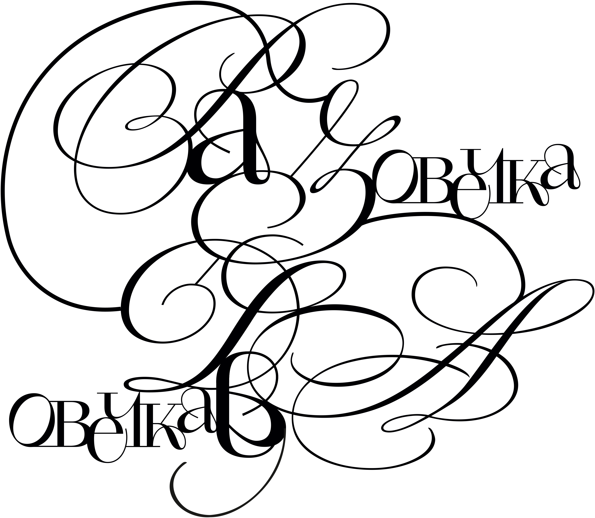
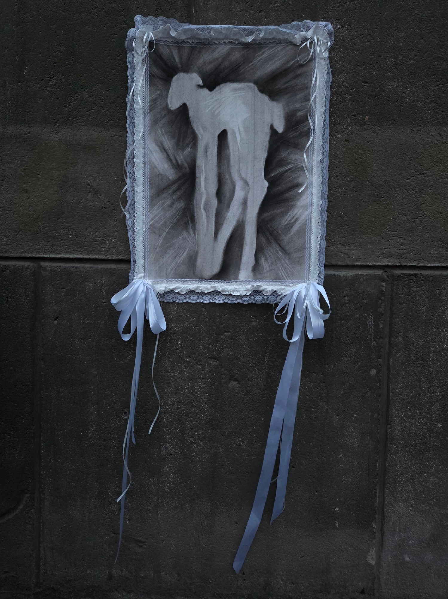
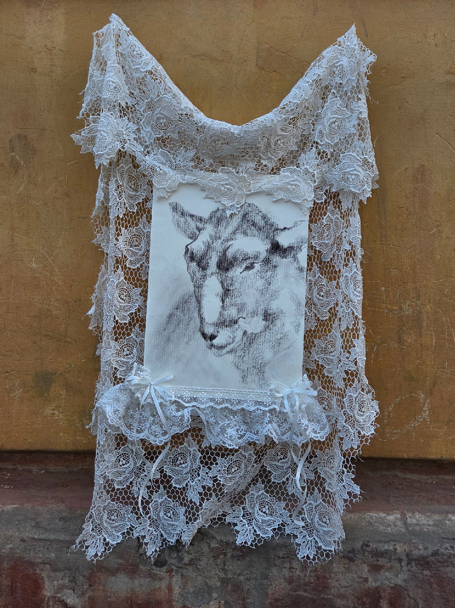
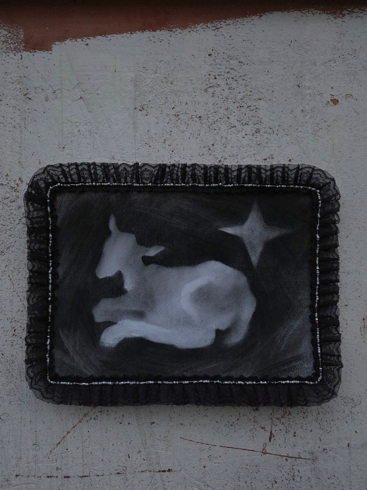
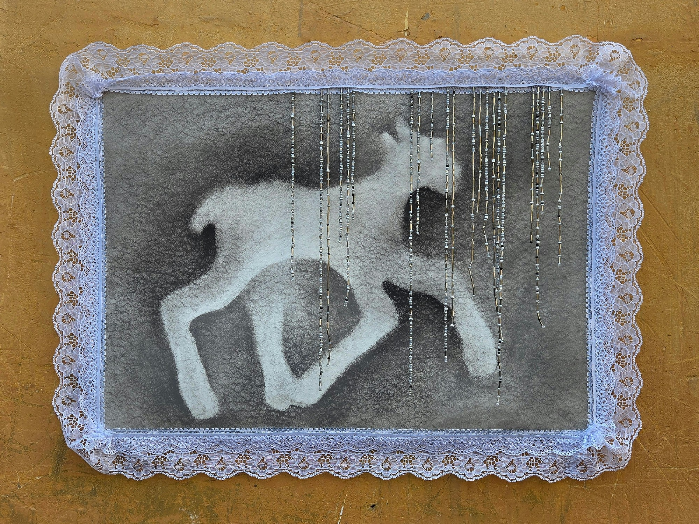
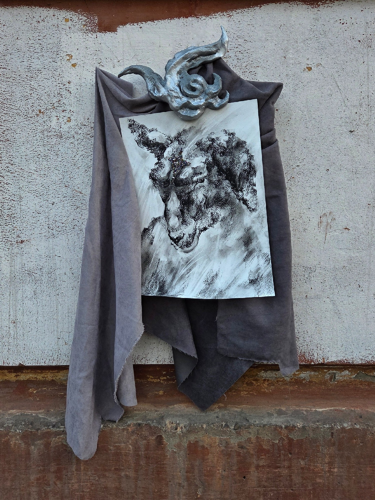
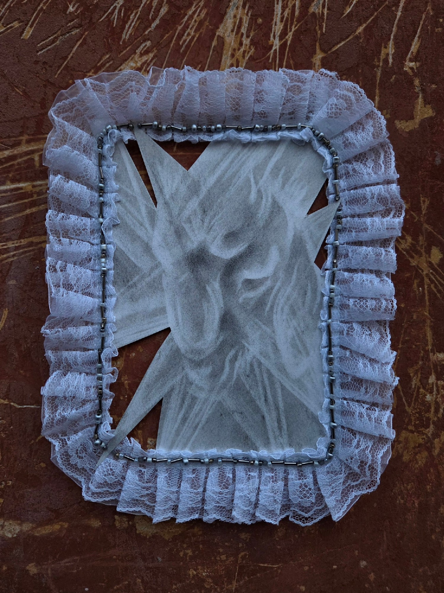
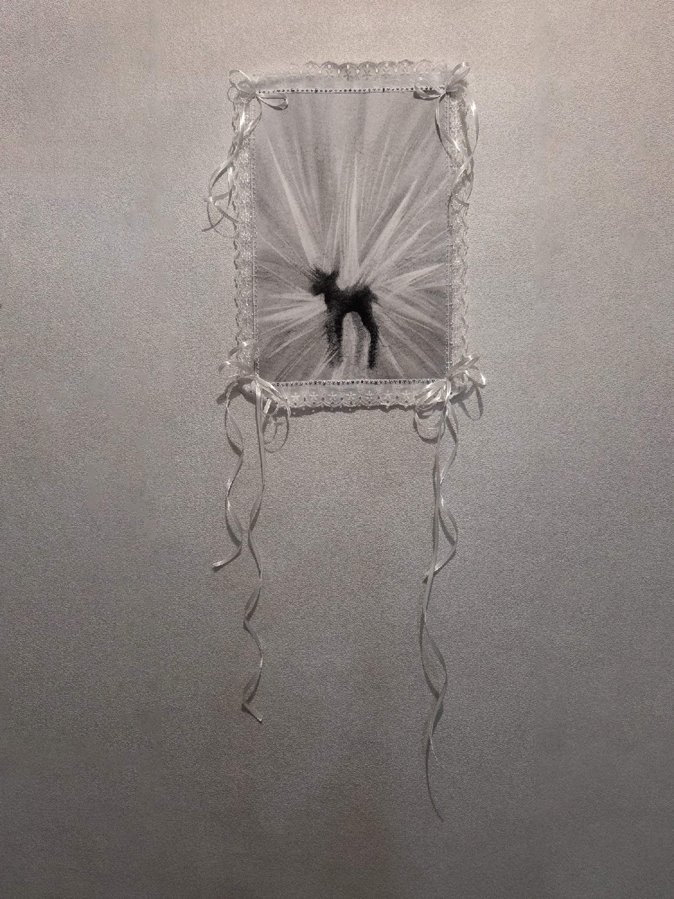
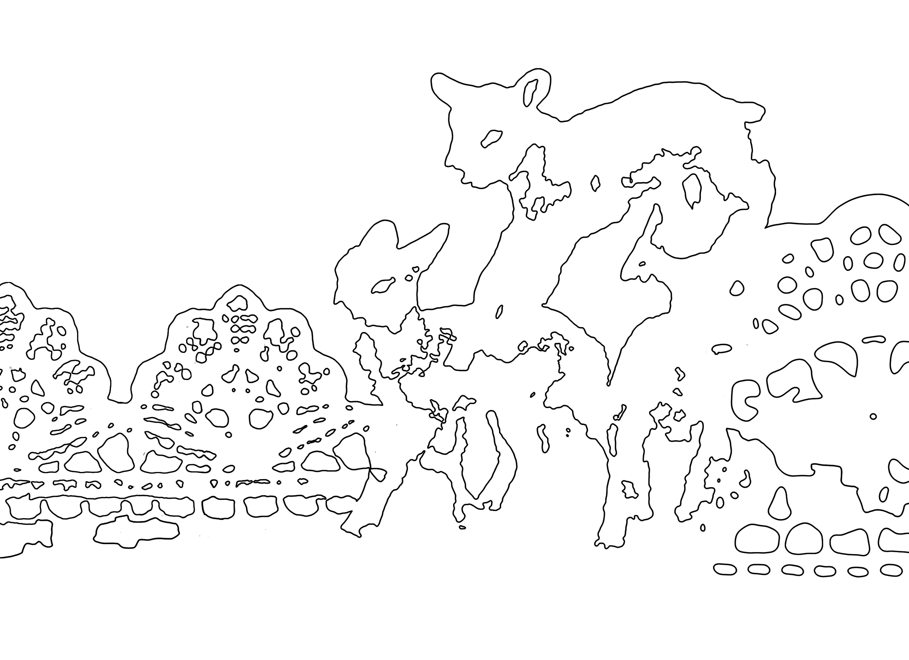

Иногда, чтобы замедлиться достаточно просто повторять: раз, два, три… Первая работа встречает нас группой игривых ягнят, они непринужденно живут в мире, от которого не ждут ничего плохого. Они возникают один за другим, наслаиваются, ускользают, возвращаются.
Ткань, нитки, уголь графический, акварельная бумага, ПВХ
100 000 ₽

Хрупкий, чуть отстранённый, словно всегда немного в тени. Этот ягнёнок не стремится быть на виду: он скромен, застенчив, живёт в своём ритме.
73 х 98
Кружева, атласные ленты, нитки, соус графический, акварельная бумага
50 000 ₽

В каждом стаде есть такая — творческая, чуть рассеянная, навсегда немного ребёнок. Она смотрит на мир иначе, замечает то, мимо чего другие проходят, её мысли всегда где-то далеко.
86 х 51 см
Кружевная ткань, кружево, атласная лента, нитки, уголь графический, акварельная бумага
30 000 ₽

Ночь — его время. Для него ночь не опасна, а прозрачна: в её тишине звёзды проступают яснее, становятся ближе.
46 х 35 см
Кружева, бисер, нитки, уголь графический, соус графический, акварельная бумага
35 000 ₽

Три силуэта, три неразлучных друга. Они идут — легко, не думая о дороге. Куда? Наверное, туда, где ждёт очередное приключение. А может, приключение уже здесь, просто в том, что они есть друг у друга.
73 х 98 см
Кружева, атласная лента, нитки, соус графический, акварельная бумага
50 000 ₽

Ее силуэт бежит то ли под звездопадом, то ли под дождём — не различить. С неба падает свет, а она ловит его на бегу, вбирает каждой частицей, и в этом движении сама становится светом — тёплым, бегущим, живым.
68 х 51 см
Кружева, бисер, нитки, соус графический, акварельная бумага
45 000 ₽

Среди общего стада он выделяется с первого взгляда: не по годам мудрый, словно рано узнавший то, что другим ещё неведомо. Он наделен рогом — знаком внутренней силы, негласного защитника, что оберегает стадо.
95 х 50 см
Ткань, бисер, уголь графический, акварельная бумага, воздушный пластелин, аэрозольная краска, ПВХ
40 000 ₽

Влюбленные ягнята, затаились в тихом уголочке. Два образа сближаются, соприкасаются, находя друг в друге тепло и опору.
40 х 26
Кружева, бисер, нитки, уголь графический, акварельная бумага
15 000 ₽

Она светится как маленькая звезда. В этом мире она словно парит, указывая путь остальным. Путеводная, невесомая, становясь видимой для тех, кому нужен свет.
21 х 26
Кружева, бисер, нитки, уголь графический, акварельная бумага
17 000 ₽

Единстренная в стаде черная овечка. Он немного уязвим из-за своего отличия, но все равно всеми любим. Он подсвечен особенно нежно, будто обведен светом. Быть другим — не значит быть чужим. Иногда это значит быть особенным.
47 х 32
Кружева, атласные ленты, бисер, нитки, соус графический, уголь графический, акварельная бумага
25 000 ₽

Они всегда рядом — брат и сестра, двое, чья связь крепче любых уз. Он защитит, она доверится. Вместе они оберегают друг друга, просто потому что иначе быть не может.
52 х 38
Кружева, уголь графический, акварельная бумага
25 000 ₽
